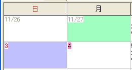
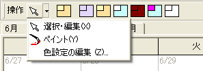
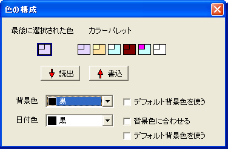

着色機能を使うと，各日付の日付数字部分および背景をそれぞれ任意の色に着色することができます．
日付への着色操作は，操作ツールバー，あるいは右クリックメニューから行います．
操作ツールバーでは，日付メモに対する操作ツールの選択と， カラーパレットからの色選択を行うことができます． カラーパレットの一番左は，現在パレットから選択されている 色を表現しています．
ツールボタンの右側に付いている プルダウンボタンを押すと，ツールの選択肢が表示されます． 現在使用できるツールと，それらの機能は次の通りです．
| 選択・編集 | 通常時のカーソルです．クリックによって日付を選択し， ダブルクリックすると編集モードに入ります． 日付を選択した状態で，カラーパレット色を変更すると， その日付が選択した色で着色されます． |
| ペイント | 着色作業に専念したい場合に，こちらを使用します． クリックによって日付を選択するか，カーソルキーで日付を選択してスペースキーを押下すると， そのセルに，現在パレットから選択している色で着色を行います． カラーパレットから色を選んでも，現在選択中のセルの色には影響を与えません． |
| カラーパレットの編集 ... | この項目はツールの選択ではありません． 着色に使う色を編集するダイアログを開きます． |
日付を右クリックしたときに表示される コンテキストメニューからは，[この日付に色を塗る]-（色を選択）を 選ぶことで日付に個別に着色することができます．
また，[この日付の色をパレットに抽出]を選ぶことで， 日付に設定されている色情報を「現在の色」として取り出しておき， 後から他の日付に着色することができます． 取り出した色を保存したい場合は，次の「着色パレットの設定」で 保存用のパレットにコピーしてください．
カラーパレットの編集を行う場合は，メニュー [カレンダー]-[カラーパレットの編集] もしくは 操作ツールバーから [カラーパレットの編集] を選び，パレットの設定ダイアログを開きます．
着色のパレットは，現在，６色まで保存可能です． 左に独立している項目が，最後に選択された色を一時保存するための パレットで，右側に並んでいる６色の設定だけが保存されます．
パレットを選択して [読出] を選択することで色の設定を読み出し， また，パレットを選択して [書込] を選択することで色の設定を保存できます．
パレットは「背景色」と「日付色」から成り立っています． 背景色は日付メモの背景色を設定し， 日付色は日付数字（日付メモの左上部分）の背景色を設定します． それぞれ，好きな色を指定できるだけでなく， [デフォルト背景色を使う]チェックボックスを選択することで 標準設定の背景色にあわせることができます． また，日付色については，背景色と同一にしたい場合 [背景色に合わせる]にチェックを付けてください．
パレットを変更するときは，その色設定を保存したいパレットを選択して [書込]ボタンを押下し，設定を保存することを忘れないようにしてください．